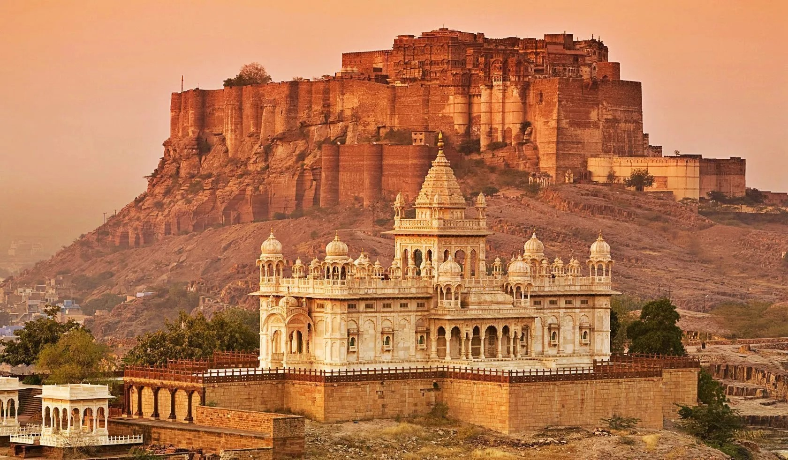

ABOUT
Location: Mehrangarh Fort is situated on a 150-meter high hill, overlooking the city of Jodhpur. Architecture: The fort is built with red sandstone, and its imposing walls stretch 6 meters thick and up to 36 meters in height in some places.  Features: Within the fort complex, there are several palaces known for their intricate carvings and expansive courtyards.Foundation: Mehrangarh Fort was founded in 1459 by Rao Jodha, the chief of the Rathore clan of Rajputs, who is also the founder of the city of Jodhpur. Expansion: Over the centuries, subsequent rulers of Jodhpur added to the fort, constructing palaces and other structures within its walls. Strategic Importance: The fort served as the seat of the Rathore rulers of Marwar and played a crucial role in the history of Rajasthan due to its strategic location on the trade routes of ancient India. Sieges and Battles: Mehrangarh Fort has witnessed several sieges and battles throughout its history, including conflicts with the Mughals and other regional powers.
Palaces: The fort houses several palaces, including Moti Mahal (Palace of Pearls), Phool Mahal (Palace of Flowers), Sheesha Mahal (Palace of Mirrors), and others, each known for their unique architecture and historical significance. Museum: Today, Mehrangarh Fort also houses a museum that displays an impressive collection of artifacts, including royal costumes, paintings, arms, and manuscripts, providing insights into the cultural heritage of the region. Festivals: The fort is a venue for several cultural events and festivals, including the Rajasthan International Folk Festival (RIFF), which attracts artists and musicians from around the world. Tourism: Mehrangarh Fort is a major tourist attraction in Rajasthan, drawing visitors with its stunning architecture, panoramic views of Jodhpur, and rich historical legacy. Mehrangarh Fort stands as a testament to the valor and grandeur of the Rathore dynasty and continues to be a symbol of Rajasthan's rich cultural heritage.